📚 What is MDM?
Watch & Listen or Read Through
[1]:
#Import appropriate library
from IPython.display import YouTubeVideo
YouTubeVideo("aKcqoPOIvfE", width=600, height=450)
[1]:
Slides and transcripts are below
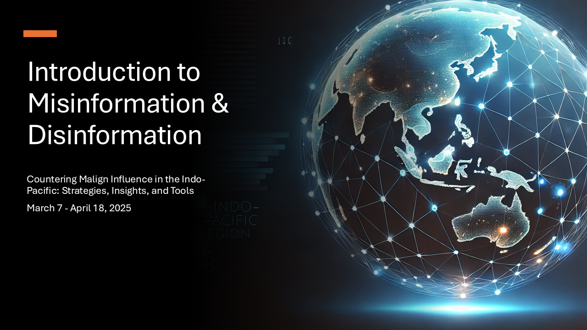
Welcome to the first lecture of the course, Introduction to Misinformation and Disinformation. Today, we’ll explore what information is, how misinformation and disinformation differ, and how these concepts have evolved throughout history. By the end of this lecture, you’ll have a solid understanding of these terms and their broader implications.
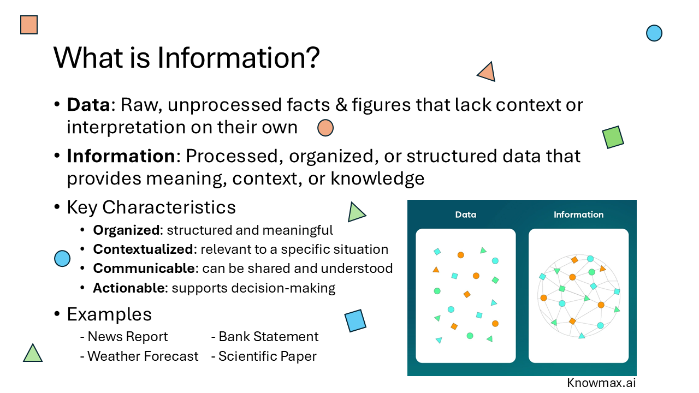
Before we can understand misinformation and disinformation, we first need to define information itself.
Data consists of raw, unprocessed facts and figures. By itself, data lacks context and interpretation—it’s just numbers, words, or measurements.
Information, on the other hand, is processed, organized, or structured data that provides meaning and knowledge. It has context, making it useful for decision-making and communication.
For example, a news report structures and summarizes current events. A weather forecast interprets temperature and atmospheric data to predict upcoming conditions. A bank statement organizes financial transactions, while a scientific paper presents research findings with analysis and context.
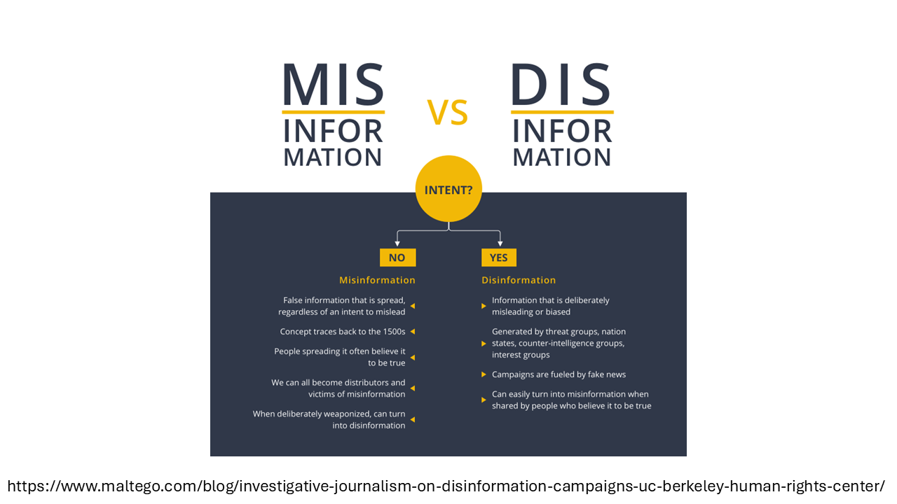
🔹 MDM History
So let’s talk about misinformation and disinformation.
If you look up these terms on ChatGPT, Google, DuckDuckGo, or even in peer-reviewed academic papers, you’ll quickly realize that there’s no universal consensus on their definitions. One paper, Defining Misinformation and Related Terms in Health-Related Literature, analyzed 75 different definitions for misinformation. Even experts in the field disagree on whether things like propaganda or satire should be classified as misinformation.
For this course, we’ll use a broad framework that aligns with common discussions on the topic. However, understand that definitions vary depending on who you ask. At its core, misinformation and disinformation refer to false or misleading information—but the key difference is intent.
While intent is a key factor, it’s not always clear-cut. Some content creators may claim they were ‘just joking’ or ‘raising questions’ to avoid responsibility, even if their messaging spreads falsehoods. In these cases, context, patterns of behavior, and motivations become important factors in determining intent. While the terms are modern, the concepts are ancient…humans have been spreading misleading information for centuries.
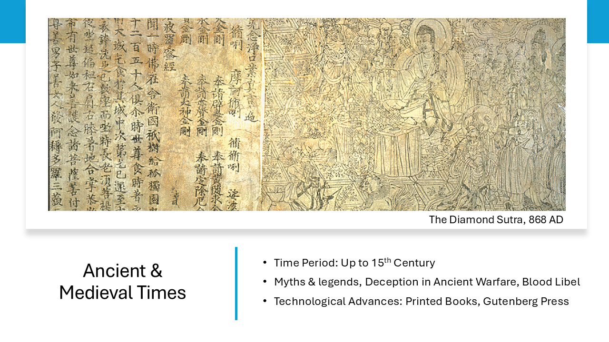
Throughout history, people have used myths, legends, and falsehoods to explain natural events, uphold power, and shape societal beliefs.
Take Norse mythology—the idea that Thor’s hammer caused thunder. While this explanation made sense to people at the time, it’s not scientifically accurate. If taken literally, it could be considered misinformation.
Similarly, consider the Divine Right of Kings—the belief that monarchs ruled because of God’s will. This concept was reinforced through religious texts, myths, and propaganda, which helped keep monarchs in power. Because it was often deliberately spread to justify rule and control people, it falls under disinformation.
A more harmful historical example is Blood Libel—an antisemitic falsehood from the Middle Ages accusing Jewish people of ritual murder. This started as misinformation, based on existing prejudices, but it became disinformation when leaders intentionally spread it to vilify Jewish communities.
With the invention of printing, misinformation and disinformation became easier to spread and harder to erase. The oldest surviving printed book, the Diamond Sutra, is depicted above and has preserved and disseminated its ideas over generations. Printed materials, whether accurate or not, have the ability to preserve misinformation fover time. It can also give certain ideologies and narratives longevity, sometimes solidifying them as historical truths even if they were misleading. The Gutenberg Press took this further, enabling the mass production of texts, meaning false information could reach more people faster—a trend we’ll see repeating in later eras.
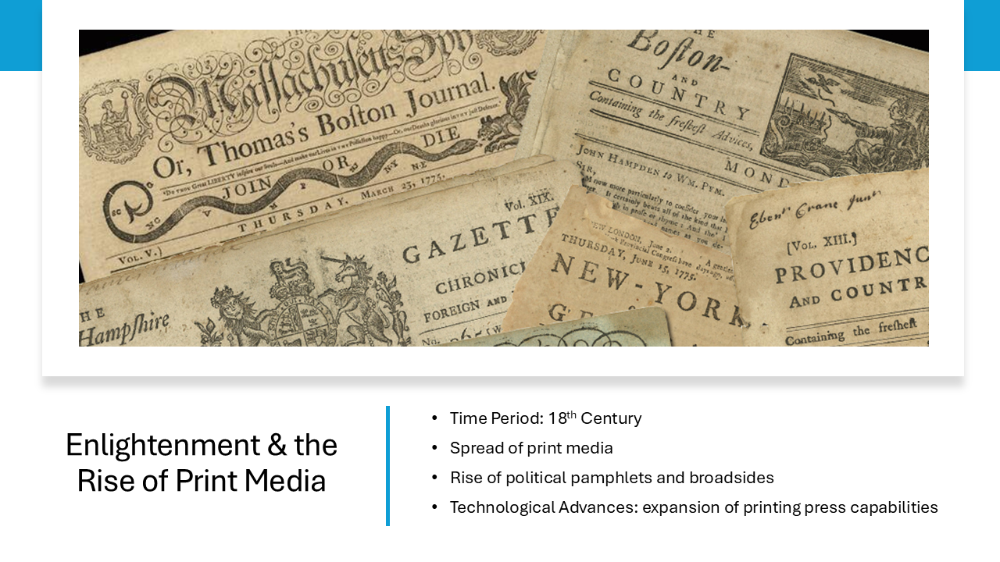
During the late 17th to 18th centuries, print media exploded.
Political propaganda was widespread, used both to support political factions and discredit opponents. Enlightenment thinkers, who challenged traditional religious and governmental authorities, often became targets of misinformation campaigns. Ironically, these same thinkers sometimes used disinformation against their adversaries as well. For example, Voltaire, an advocate for free speech, secularism, and reason used satire and fabricated stories to attack the Catholic Church and Monarchy.
Beyond books, new forms of media emerged to include pamphlets, newspapers, and periodicals. This made information more engaging, visually appealing, and digestible.
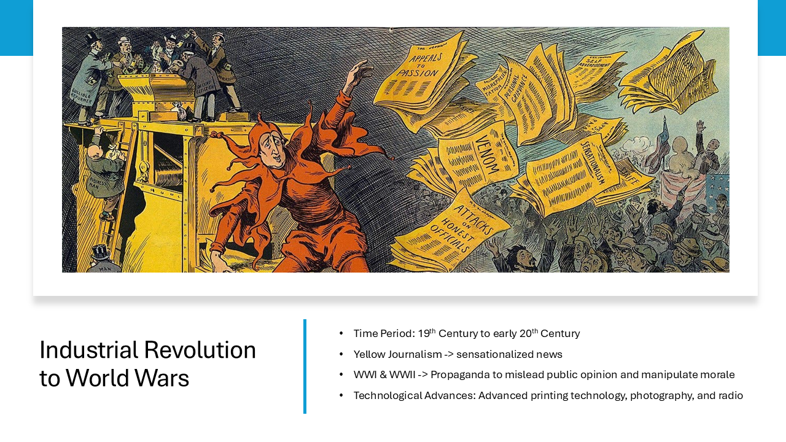
By the 19th and early 20th centuries, sensationalized journalism—or yellow journalism—took off.
Yellow journalism intensifed the appeal to emotion, and relied on exaggerations, fear-mongering, and scandals to attract readers. Competing newspapers in the 1890s used dramatic headlines, faked interviews, and fabricated events to sell copies.
At the same time, governments were actively using propaganda. During World War I, both Allied and Central Powers ran campaigns to sway public opinion and justify their actions. False reports of enemy atrocities were widely circulated to demonize opponents.
By World War II, these tactics evolved into full-scale deception operations, such as Operation Bodyguard, where the Allies used fake radio transmissions and inflatable tanks to mislead the Germans about the D-Day invasion. This can be categorized as strategy but nevertheless illustrates the use of disinformation.
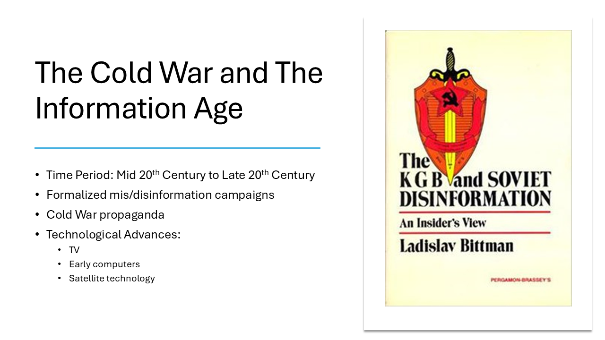
During the Cold War, misinformation and disinformation became key tools of statecraft. Intelligence agencies, propaganda ministries, and media outlets were mobilized to distort facts, manufacture narratives, and suppress dissenting viewpoints.
The KGB ran extensive disinformation campaigns, including fabricating documents, planting false stories in Western media, and supporting front organizations to spread anti-American sentiments. One notable example was “Operation INFEKTION,” a campaign to spread the false claim that the U.S. created HIV/AIDS as a bioweapon.
The U.S. and its allies countered Soviet disinformation with their own information campaigns. Radio Free Europe and Voice of America broadcast Western perspectives behind the Iron Curtain, providing censored information to Soviet-bloc populations.
Both sides infiltrated and manipulated news organizations to amplify favorable narratives. The CIA secretly funded magazines, newspapers, and cultural organizations to promote democracy and capitalism, while the USSR funneled resources into Communist-aligned publications worldwide.
Propaganda became a defining feature of Cold War society. Governments, media, and entertainment industries were used to instill ideological loyalty and vilify the opposing bloc. Anti-Communist propaganda flourished in the U.S., portraying Communists as existential threats to democracy. Government-led efforts, such as the House Un-American Activities Committee (HUAC), targeted suspected Communists in media, academia, and politics.
The Cold War era saw transformative advancements in communication technologies, which both facilitated and complicated information control. By the 1950s, television became the dominant medium for news and political messaging. Governments used televised speeches, documentaries, and news reports to influence public opinion. Iconic moments, such as the televised Nixon-Khrushchev “Kitchen Debate” and the moon landing, became ideological battlegrounds.
Governments began using computational analysis for intelligence gathering, propaganda dissemination, and surveillance. The U.S. ARPANET, a precursor to the internet, emerged as a military project for secure communication, laying the groundwork for the digital age. Satellites revolutionized communication, enabling real-time broadcasting across continents. The 1960 launch of the first weather satellite and subsequent Cold War spy satellites transformed military intelligence and news dissemination, making information warfare more immediate and impactful.
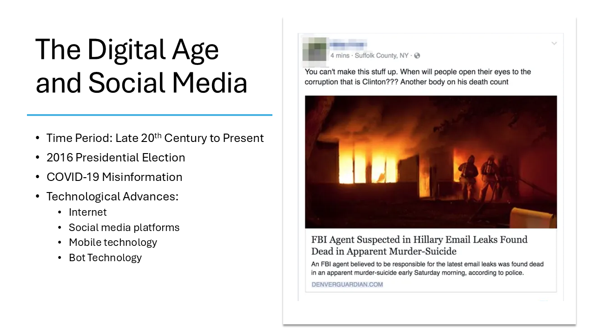
We now live in the digital and social media age, where the proliferation of mobile technology and smartphones has made access to information, misinformation, and disinformation instantaneous. Never before has false or misleading content been able to spread so quickly or reach such vast audiences with just a few taps on a screen.
One major example was the 2016 U.S. Presidential Election, which underscored the significant role of social media platforms like Facebook, Twitter, and YouTube in amplifying misinformation.
Foreign actors, particularly Russia’s Internet Research Agency, orchestrated a large-scale disinformation campaign that leveraged automated bot accounts, coordinated troll farms, and micro-targeted political advertisements to manipulate public opinion. Automated bot networks artificially boosted misleading content, making it appear more popular and credible than it actually was. Troll farms created and managed fake social media accounts that posed as American citizens, engaging in divisive discussions, spreading false claims, and attacking political candidates. Targeted disinformation ads used Facebook’s micro-targeting features to push inflammatory messages to specific demographic groups, often exploiting existing social and racial tensions. Fabricated news stories—such as false claims about voter fraud, rigged ballots, or conspiracy theories linking candidates to criminal activity—were widely shared across platforms, influencing public perceptions.
The digital age has pushed many users into echo chambers and filter bubbles. Because algorithms tailor content to individual preferences, people are increasingly exposed only to information that aligns with their pre-existing beliefs. This reinforces biases, reduces critical engagement with opposing viewpoints, and makes misinformation even harder to recognize.
We’ll explore why misinformation is so believable in the next lecture, but for now, keep in mind that the combination of mobile technology, algorithm-driven content, and bot networks has fundamentally changed how misinformation spreads in the modern era.
🔹 10 Types of MDM
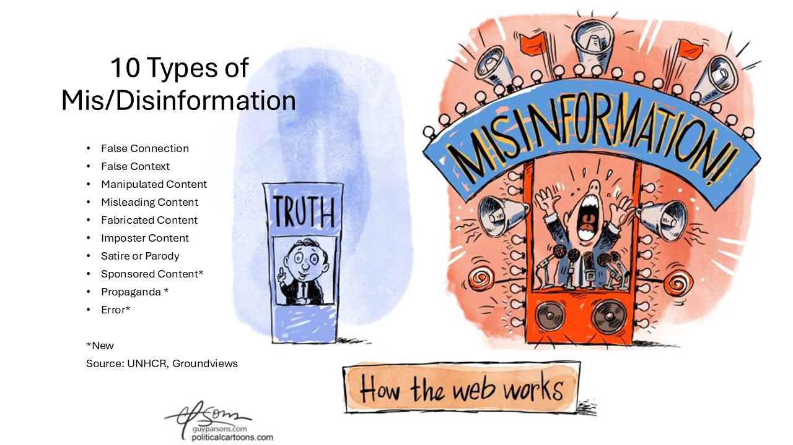
Take a moment to pause, stretch, or reflect, because next, we’ll discuss 10 types of misinformation and disinformation. Some of these categories, like propaganda and error, are still debated, but we’ll break them down in detail.
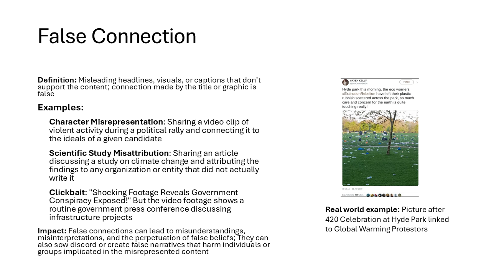
False connection occurs when a headline, visual, or caption is misleadingly linked to unrelated content.
Take the image on the right—it shows trash scattered across a park. The person who posted it falsely claimed this was left behind by climate change protestors. In reality, the image is from an entirely different event—a 420 celebration at the same park.
False connections can distort perceptions and fuel misinterpretations, even when the content itself isn’t fabricated.
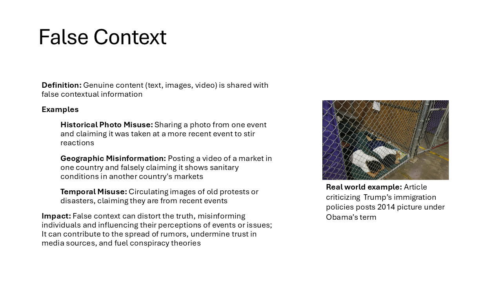
False context occurs when text, images, or video are accurately associated with a topic, but the accompanying details or implications are misleading.
Take the image on the right—it shows a 2014 photo of immigration detention centers. However, in 2018, some media outlets used it to criticize Trump’s immigration policies, falsely implying the image depicted events from his administration rather than Obama’s.
You’ll notice additional examples on the slide—I won’t go through all of them now, but feel free to pause the video or review the PDF version of the slides later. I’ve also included more examples in the Actors and Motivations section, so you’ll have multiple references.
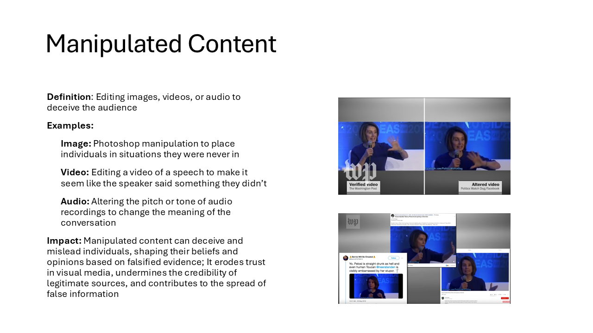
Manipulated content includes edited images, videos, or audio designed to deceive the audience.
Let’s look at an example—this manipulated video of Nancy Pelosi was deliberately slowed down to make her appear intoxicated.
Although the only edit was a slower playback speed, when paired with a sensational headline like “House Speaker Convenes Meeting While Drunk,” many people believed the content as truth.
Look at the social media comments below the video—this false narrative gained traction, with people reacting as if the manipulated content was legitimate.
Manipulated content is particularly dangerous because small edits can dramatically alter perception, especially in the era of deepfakes.
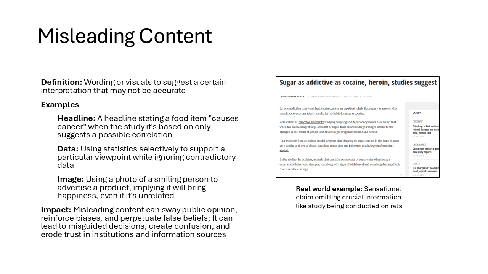
Misleading content is when wording or visuals suggest an interpretation that isn’t entirely accurate.
Take the example on the right—an article with the headline: “Sugar as Addictive as Cocaine and Heroin.” This headline immediately grabs attention, but if readers don’t go beyond the headline, they might assume this claim is universally accepted. In reality, the study referenced in the article was conducted on rats, not humans.
Many people skim headlines or share articles without reading them in full. Misleading content thrives on that behavior, allowing misinformation to spread even when the underlying research is more nuanced than the headline suggests.
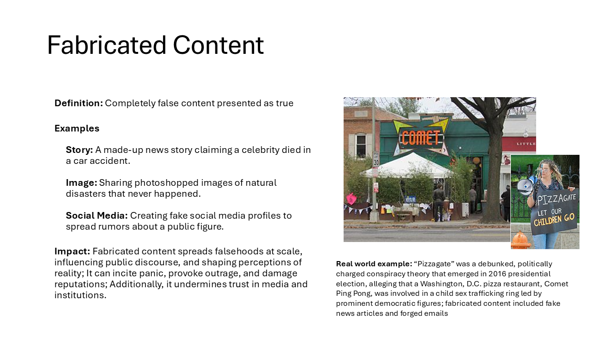
Fabricated content is entirely made up—it has no basis in reality.
A well-known example is Pizzagate, a politically charged conspiracy theory that gained traction during the 2016 U.S. Presidential Election.
The false claim alleged that Comet Ping Pong, a pizza restaurant in Washington, D.C., was running a child sex trafficking ring led by Hillary Clinton and other Democratic officials.
Despite being completely baseless, this fabrication led to real-world consequences, including an armed individual entering the restaurant believing the claims were true.
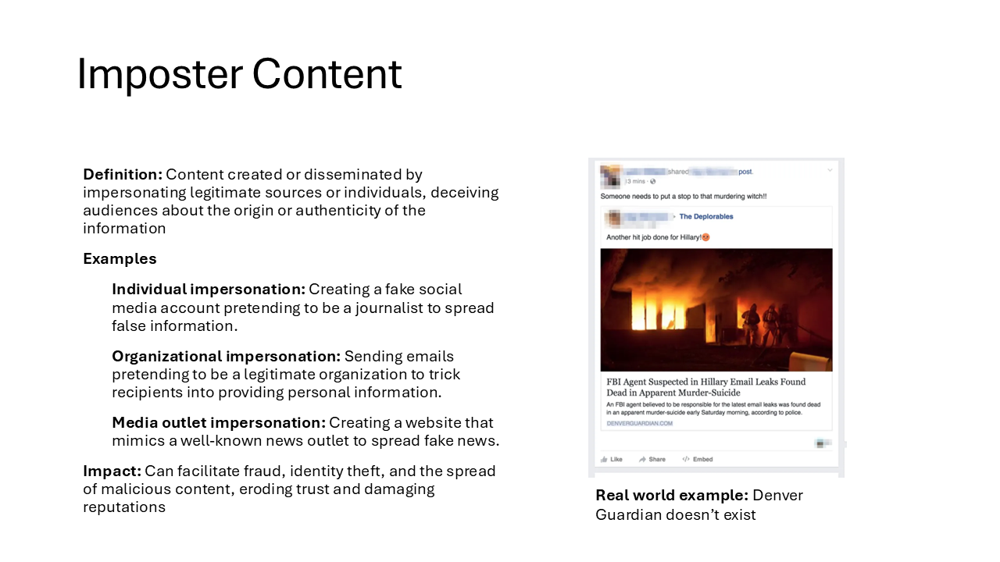
Imposter content imitates legitimate sources or individuals to spread false information.
In the image on the right, the Denver Guardian, which sounds like a credible news outlet but is, in fact, a fabricated source, published this article about an FBI agent involved in the investigation of Hillary Clinton’s email links. Some notes about the Denver Guardian include
The domain was first registered in July 2016, just a few months before the election.
The only story published was a fake murder-suicide involving an FBI agent tied to Hillary Clinton’s emails.
Any other fake headline on the site led to an error message.
The article cited a Walkerville Police Chief named Pat Frederick—but Walkerville didn’t exist, and neither did the officer.
The listed newsroom address was simply a parking lot.
By appearing credible, imposter content deceives audiences into trusting false information, making it a powerful tool for disinformation campaigns.
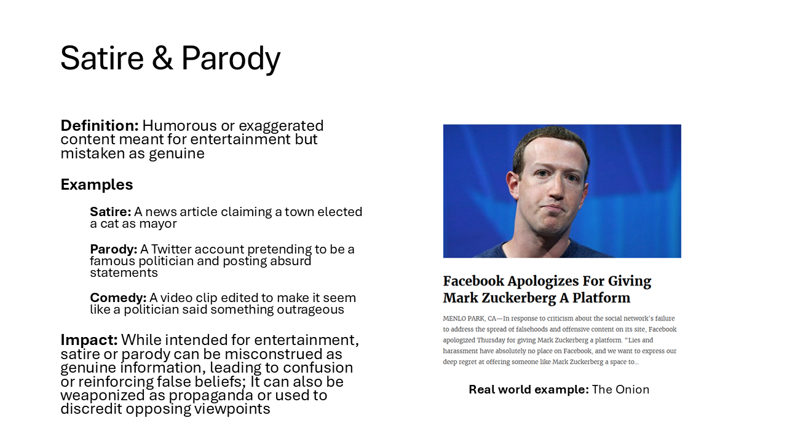
Satire and parody are humorous or exaggerated content meant for entertainment—but sometimes, they are mistaken for truth.
I personally enjoy shows like The Daily Show with Trevor Noah and publications like The Onion. For my ROTC folks, Duffel Blog is a great satirical site focused on military humor. Most people recognize satire when it’s clearly labeled, but when taken out of context, satirical content can be misunderstood.
In casual discussions or when satire is circulated without its original framing, people may assume it’s real news, contributing to misinformation.
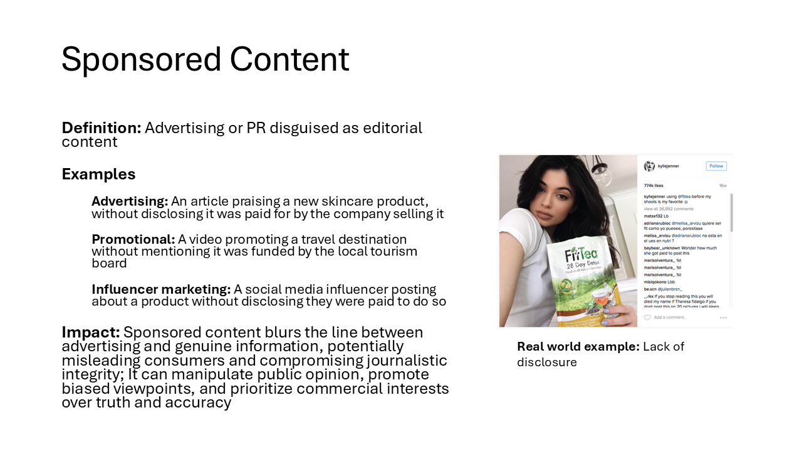
These last three categories are not always considered misinformation or disinformation, but they are important to be aware of.
Sponsored content is paid messaging, but when improperly disclosed, it can mislead audiences into thinking it’s unbiased information.
There are two types of sponsored content:
Advertising & Promotions – Clearly labeled ads are fine, but when promotional content is disguised as editorial opinion, it can be deceptive.
Influencer Marketing – Influencers promoting products should disclose sponsorships, but when they don’t, followers may believe their endorsements are impartial, which blurs the line between information and persuasion.
When disclosures are missing or unclear, sponsored content can mislead audiences into believing they’re consuming neutral, informative content, rather than paid promotions.
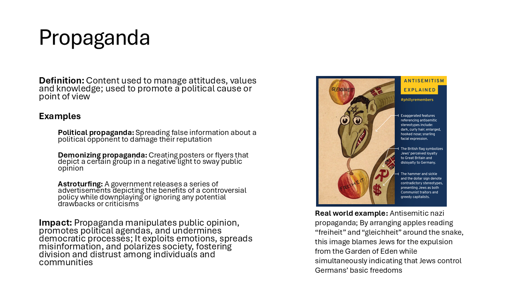
Propaganda is content designed to influence attitudes, values, and beliefs—often for political or ideological purposes.
On the right, you’ll see Nazi propaganda from World War II, which demonized Jewish people, normalized hatred, and encouraged nationalism and racial purity.
Propaganda doesn’t have to be false to be effective—it simply has to manipulate perceptions in a way that benefits those spreading it.
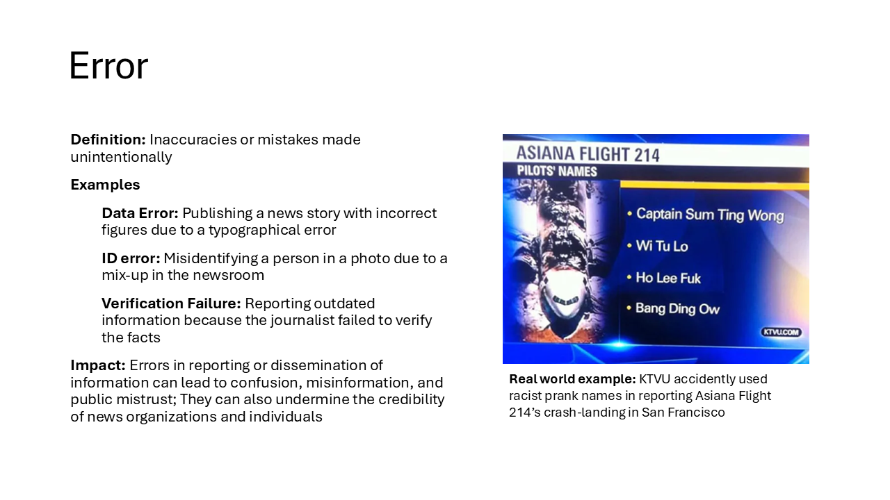
Not all misinformation is deliberate—some are simply errors or honest mistakes.
A well-known example comes from San Francisco’s KTVU news station, which mistakenly reported racist prank names as the pilots of Asiana Flight 214, a plane that crashed at San Francisco International Airport.
The news team rushed to publish names without double-checking their validity.
They didn’t realize it was a prank before broadcasting it live.
This was not intentional misinformation, but a failure in verification—which, as we’ll see throughout this course, is a major factor in how misinformation spreads
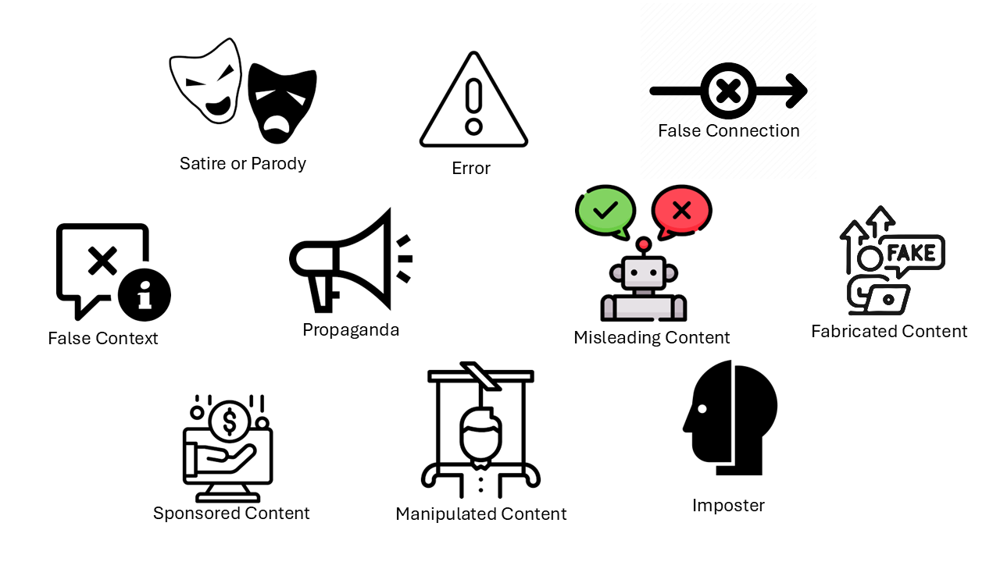
By now, you’ve likely noticed that misinformation and disinformation don’t always fit neatly into a single category. A single piece of misleading content can fall into multiple types depending on how it is created, shared, and interpreted.
For example:
A false connection (where a headline doesn’t match the article) can also be misleading content if the wording suggests a different conclusion than the actual information.
A manipulated image (altered to mislead viewers) can also be imposter content if it falsely attributes the image to a legitimate source.
A satirical news article can become false context if someone shares it as if it were a real event.
The point in reviewing these 10 types is to be able to identify and categorize content.
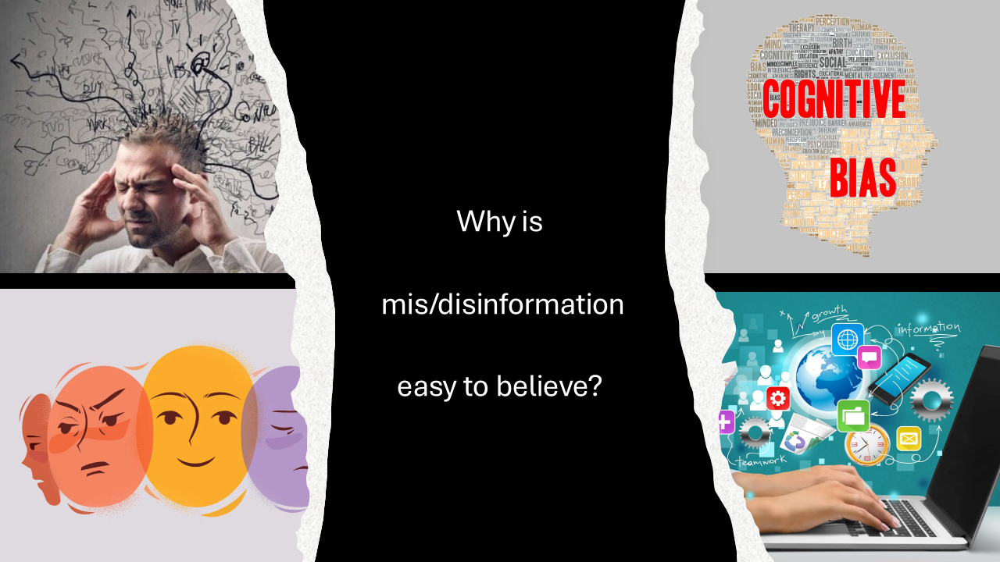
At a glance, it might seem surprising that misinformation persists—even when fact-checking is available and contradictory evidence exists. However, human psychology, social dynamics, and digital environments all contribute to why MDM is so convincing.
People naturally seek out and believe information that aligns with their preexisting beliefs and tend to trust repeated claims, even if they are false.
MDM is often designed to trigger fear, anger, or outrage, making it more likely to be believed and shared.
Social media algorithms prioritize engagement over accuracy, amplifying falsehoods that provoke strong reactions. Meanwhile, echo chambers reinforce certain narratives, making misinformation feel even more credible.
In today’s digital age, people are bombarded with content, making it difficult to critically evaluate every claim they encounter.
While these factors offer a glimpse into why MDM is so persuasive, they are just the tip of the iceberg. In our next lecture, we will take a deeper dive into the psychology behind misinformation, exploring how cognitive biases, social influences, and digital ecosystems shape belief formation—and, most importantly, what we can do to recognize and resist manipulation.